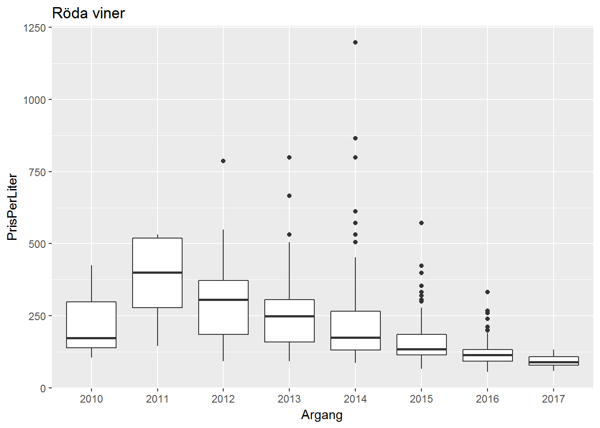

Läs R4DS kapitel 7.
Lös övningskapitel Exploring Categorical Data och Exploring Numerical Data på DataCamp.
c("Vitt vin", "Rött vin", "Rosévin", "Mousserande vin") med årgångar 2010-2017. Prova och jämför nedanstående stapeldiagram
ggplot med aes(x = Argang), geom_bar() ochggplot med aes(x = Argang) och geom_bar() facet_wrap(~ Varugrupp) (lägg eventuellt till argumentet scale = "free_y" till facet_wrap)ggplot med aes(x = Argang, fill = Varugrupp) och
geom_bar()geom_bar(position = "dodge")geom_bar(position = "fill")Återskapa nedanstående plot (för Röda viner från det ordinarie sortimentet) 
Gör en box_plot av PrisPerLiter på log-skala, med x = Varugrupp. Prova coord_flip för att göra det hela mer läsbart.
Följande kod gör om medaljdata till så kallat “långt” format (mer om detta nästa tillfälle!) som är enklare att arbeta med i ggplot:
medal_long <- read_csv("data/Winter_medals2018-01-16.csv") %>%
select(-Total) %>%
gather(Denomination, Number, c("Gold", "Silver", "Bronze"))Kolumnen Denomination innehåller nu medaljvalör och Number antal av denna valör, använd group_by och summarise för att summera det totala antalet medaljer per valör och land. Illustrera andelen olika medajvalörer för länderna, t.ex. genom att använda geom_bar med stat = "identity och position = "fill".